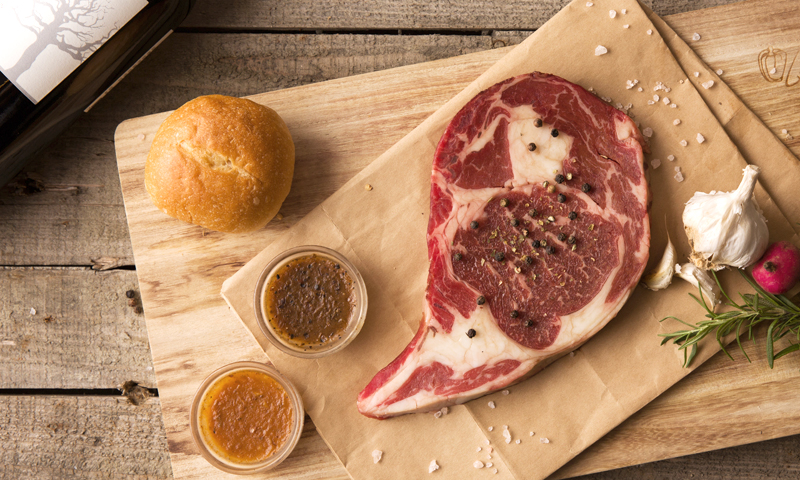
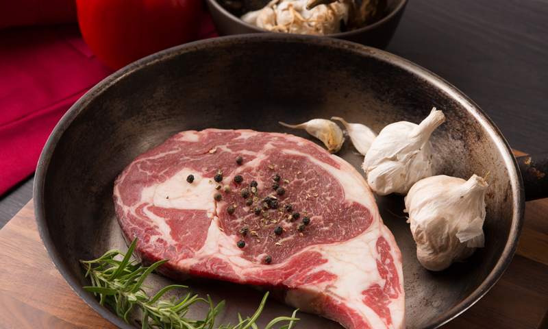
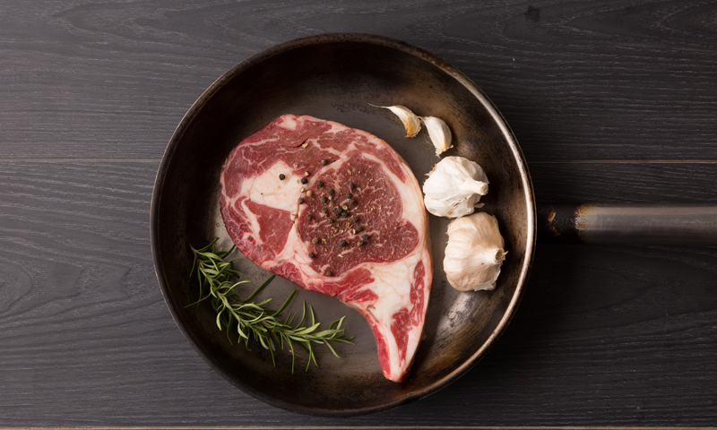

五分鐘韓式煎烤牛小排

教你主廚們都有哪些煎牛排小撇步，讓牛排外酥內嫩，有牛肉的焦香味，也嚐得到牛肉的軟嫩。
建議部位 菲力、沙朗、紐約克、板腱
Step1.
取平底鍋熱油，牛排下鍋前，確定鍋子夠熱，防只肉汁流失。

Step2.
將牛排放入平底鍋，最好一次煎一片，以免鍋子溫度驟降。若牛排週邊大量冒水泡，
表示鍋子溫度不夠。避免用夾子、鏟子戳牛排。

小撇步
1. 若是冷凍牛排烹調前需完全解凍，可於前一天放置冰箱冷藏室解凍。
2. 建議使用清淡且耐高溫的食用油，以品嚐牛排的原味。
3. 依個人喜愛熟度、牛排厚度而定，斟酌翻面和起鍋時間。
4. 肉汁是牛排好吃的關鍵之一，牛排起鍋後靜置，可避免過多肉之流失。